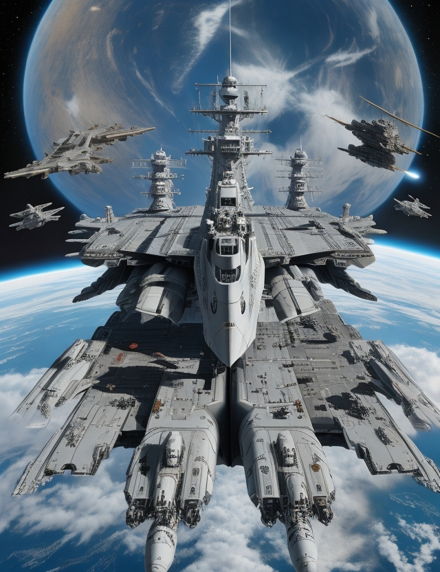

The Nebeská Hlídka, our Capital space fleet, coming back from Alpha Centauri
Space fleets are the majestic armadas that traverse the cosmic expanse, comprising an array of vessels meticulously crafted for the rigors of interstellar exploration and warfare.
Drawing inspiration from the hierarchical framework of modern surface navies, these fleets represent a fusion of cutting-edge technology, strategic acumen, and sheer might, transcending the confines of planetary boundaries to assert dominion over the celestial seas.
At the helm of these formidable fleets are colossal capital ships, behemoths of metal and circuitry, bristling with armaments and housing entire ecosystems of crew quarters, command centers, and hangars.
These leviathans, ranging from dreadnoughts to carriers, serve as the linchpins of fleet operations, projecting power, command, and protection across the starry abyss.
Complementing these titans are an assortment of specialized vessels, each meticulously engineered to fulfill distinct roles within the fleet's ecosystem.
Support ships ply the void, their purpose twofold: to sustain the fleet through resupply missions, repair endeavors, and medical aid, and to serve as the conduits of communication, ensuring cohesion amidst the chaos of space-borne engagements.
Strike craft, agile and lethal, dance through the vacuum with deadly grace, their pilots honing their skills to perfection as they engage in intricate dogfights, intercept missions, and surgical strikes against enemy targets.
These nimble vessels, ranging from sleek interceptors to formidable bombers, form the fleet's first line of defense and spearhead its offensive thrusts.
Venturing beyond the frontiers of known space are the intrepid explorers, their vessels equipped with state-of-the-art sensors and scanning arrays, tasked with unraveling the mysteries of uncharted sectors, charting hyperspace routes, and cataloging celestial phenomena.
These reconnaissance ships serve as the fleet's eyes and ears, their discoveries shaping the course of future expeditions and strategic endeavors.
In the heart of the fleet's logistical apparatus are the transport vessels, ferrying troops, materiel, and vital resources across the cosmic expanse.
These lifelines ensure the sustained operation of the fleet, facilitating rapid deployments, resupplies, and planetary landings with precision and efficiency.
In the shadows lurk the silent sentinels, vessels cloaked in secrecy and stealth, their hulls adorned with cutting-edge camouflage systems and sensor-jamming arrays.
These stealth ships excel in infiltration missions, conducting clandestine operations deep behind enemy lines, sabotaging infrastructure, gathering intelligence, and sowing chaos with surgical precision.
Rounding out the fleet's arsenal are the planetary assault and defense platforms, mighty bastions of firepower and fortitude, designed to rain destruction upon enemy strongholds from orbit or repel incursions with overwhelming force.
These formidable constructs serve as the final bulwark of defense for the fleet's interests, ensuring its supremacy in contested territories.
Glory to EuroGuardian!

A new fleet, taking off from an exoplanet's atmosphere